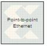

|
|
The Xilinx Point-to-point Ethernet Co-Simulation block provides an interface to perform hardware co-simulation through a raw Ethernet connection.Refer to the topic Ethernet Hardware Co-Simulation for further details about the interface, its prerequisites and setup procedures.A new Point-to-point Ethernet co-simulation block is created by selecting "Point-to-point Ethernet Cosim" as the compilation target in a System Generator block. The resulting block with have ports corresponding to the original gateways (or subsystem ports). The generated block can then be used just like any other Sysgen block. The co-simulation block interacts with the FPGA hardware platform during a Simulink simulation. Simulation data written to the input ports of the block passes to the hardware via the block. Conversely, when data is read from the co-simulation block's output ports, the block reads the appropriate values from the hardware and drives them on the output ports so they can be interpreted in Simulink. In addition, the block automatically opens, configures, steps, and closes the platform.